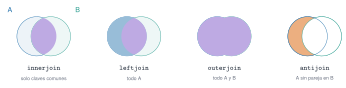
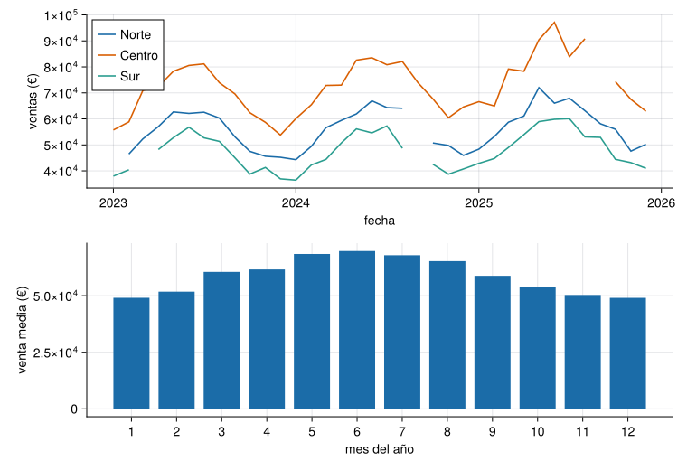

Los datos reales de planta son tablas con fechas: una lectura cada diez minutos, un pedido cada mes, una incidencia cada vez que ocurre. Casi toda pregunta útil sobre ellos es de uno de estos tipos: ¿cuánto en total por región y por año? (agrupar), ¿qué hay de cada región en la otra tabla? (unir) y ¿cómo es un día típico? (remuestrear). Esta unidad lleva DataFrames.jl de lo básico de J1.6 a estas tres operaciones, con el tratamiento correcto de fechas, ausentes y duplicados.
NotaCómo se lee esta unidad
Tiempo orientativo: 120 minutos. Objetivos (5), teoría en cinco píldoras (25), práctica guiada (55), «Pídeselo a Claude» (15), ejercicios (15) y cierre (5). Se usan tres conjuntos sintéticos del repositorio: ventas mensuales por región (con ausentes y un duplicado), registro de temperatura de una nave cada 10 minutos (con un hueco de 13 muestras) y ausencias de personal (con fechas en dos formatos).
Objetivos y prerrequisitos
Objetivos. Al terminar esta unidad sabrás:
interpretar fechas en distintos formatos y operar con ellas (Date, DateTime, periodos);
agrupar y resumir con groupby, combine, select y transform;
unir tablas con innerjoin, leftjoin, outerjoin y antijoin, y evitar la multiplicación de filas;
remuestrear una serie temporal (de 10 minutos a horas o al ciclo diario) y localizar huecos;
detectar y tratar duplicados y valores ausentes dejando constancia de la decisión.
Prerrequisitos. El curso no los impone en el temario; conviene J1.6 (CSV, DataFrame, missing) y J2.1 (organización del proyecto).
Reparto con otras unidades. Aquí se aprenden las operaciones. La limpieza sistemática (huecos, saltos, anómalos) está en J2.3 y las figuras, en J2.4.
Teoría breve
NotaUn poco de historia: dividir, aplicar, combinar
Casi todo el análisis de tablas por grupos sigue una receta que Hadley Wickham bautizó en 2011 como split-apply-combine: dividir el problema en trozos, aplicar a cada uno la misma operación y combinar los resultados (Wickham 2011). El manual de DataFrames.jl la adopta de forma explícita y la cita como referencia conceptual: groupby divide, y combine, select y transform aplican y combinan (Split-apply-combine, en el manual de DataFrames.jl 2026). Reconocer la receta ayuda a leer cualquier código de agrupación, en Julia o en otro lenguaje.
Julia distingue Date (un día) y DateTime (un instante, con hora). Se crean con Date(2025, 6, 6), se leen de un texto con un formato (dateformat"dd/mm/yyyy") y admiten aritmética con periodos (Day(3), Hour(1), Month(1)). Se consulta con year, month, dayofweek, hour y se redondea hacia abajo con floor, que es la base del remuestreo:
Los ficheros reales mezclan formatos. En las ausencias de personal, un 9 % de las fechas está como dd/mm/aaaa y el resto como aaaa-mm-dd. Se interpreta cada texto con el formato que le corresponde y se comprueba que no queda ninguno sin interpretar:
Leer 03/04/2025 sin saber si es el 3 de abril o el 4 de marzo: el formato se pregunta, no se supone. Y comparar fechas como texto ("2025-06-06" < "2025-12-01" funciona por casualidad con el formato ISO, pero "6/6/2025" < "12/1/2025" no).
¿Cuántos días hay entre el 15 de marzo y el 6 de junio de 2025?
Date(2025, 6, 6) - Date(2025, 3, 15) devuelve un periodo de días.
83 días (16 de marzo a 31 de marzo son 16, abril 30, mayo 31 y 6 de junio: \(16+30+31+6=83\)).
J2.2.2 Agrupar: groupby, combine y transform
groupby(df, :col) divide la tabla en grupos; combine los resume (una fila por grupo), transform añade columnas sin cambiar el número de filas y select conserva solo las columnas pedidas. La sintaxis origen => función => destino da nombre explícito al resultado (Split-apply-combine, en el manual de DataFrames.jl 2026):
Un transform por grupo sirve para normalizar dentro de cada grupo, por ejemplo expresar el total de cada año como fracción del total del periodo 2023–2025 de su región:
combine(groupby(df, :region), ...) devuelve una fila por cada fila original de df.
Falso. combine devuelve una fila por grupo (o las que calcule la función). Para conservar las filas originales se usa transform.
J2.2.3 Unir tablas
Una unión (join) combina dos tablas por una clave. Se elige según qué filas se quieran conservar (Figura 1): innerjoin solo las claves comunes, leftjoin todas las de la tabla izquierda, outerjoin todas las de ambas y antijoin las de la izquierda que no tienen pareja (muy útil para encontrar claves huérfanas).

Figura 1: Tipos de unión. Con una tabla A (a la izquierda) y otra B (a la derecha): innerjoin conserva la parte común, leftjoin todo A con lo que case de B, outerjoin todo, y antijoin lo de A que no está en B.
Se comprueba con una tabla auxiliar de regiones que tiene una región más (Este, sin ventas) y todas las que aparecen en las ventas:
Y el peligro clásico, la multiplicación de filas: si la tabla auxiliar tiene la clave repetida, cada fila de ventas se copia tantas veces como repeticiones. validate lo atrapa:
(filas_ventas = 108, tras_el_join_con_clave_repetida = 144, validate_lo_detecta = "ArgumentError: Merge key(s) in df2 are not unique. df2 contains 1 duplicate key: (region = \"Norte\",).")
AdvertenciaErrores frecuentes
Unir sin comprobar que el número de filas es el esperado. La regla: antes y después de cada unión se cuentan las filas, y se usa validate para declarar la cardinalidad ((false, true) = «cada clave aparece como mucho una vez en la derecha»). Otro: unir por columnas de texto con mayúsculas, espacios o tildes distintos ("Norte " frente a "Norte").
¿Cuántas filas tiene leftjoin(v, regiones, on=:region), con v las ventas sin duplicados?
108: todas las filas de ventas (36 meses por 3 regiones); la región Este no aparece porque no está en la tabla izquierda.
J2.2.4 Remuestrear una serie temporal
Remuestrear es pasar de una resolución temporal a otra más gruesa: de 10 minutos a horas, de horas a días. Se redondea cada instante hacia abajo con floor, se agrupa por el resultado y se resume. Con el registro de temperatura (una muestra cada 10 minutos durante 14 días) se obtienen horas, y de estas, el ciclo diario medio:
Hay 14 × 24 = 336 horas; dos sin ninguna muestra (las 04:00 y las 05:00 del 6 de junio) y una con 5 (las 06:00, de la que falta la muestra de las 06:00). Es el hueco de 13 muestras del sensor. Un resumen por hora debe llevar su número de muestras válidas: una media de 1 muestra no vale lo que una de 6.
Al remuestrear, conviene guardar también cuántas muestras válidas ha tenido cada intervalo, porque una media con pocas muestras es menos fiable.
Verdadero. El recuento permite filtrar o ponderar los intervalos incompletos y delata los huecos, que de otro modo quedan escondidos en la media.
J2.2.5 Duplicados y ausentes
Dos comprobaciones obligatorias en cualquier tabla nueva. Los duplicados: nonunique(df) marca las filas repetidas (a partir de la segunda aparición) y unique(df) las elimina; con una clave (unique(df, [:fecha, :region])) se buscan repetidos por clave aunque el resto de columnas difiera. Los ausentes: count(ismissing, col), y luego una decisión explícita (ignorar, rellenar o quitar la fila) y registrada. En las ventas hay un duplicado exacto (mayo de 2024 en la región Norte) y cinco importes ausentes:
Tras cada operación sobre una tabla se cuentan las filas: después de leer, de quitar duplicados, de cada unión y de cada filtro. Un número de filas inesperado es el síntoma de casi todos los errores silenciosos.
Wickham, Hadley. 2011. «The Split-Apply-Combine Strategy for Data Analysis». Journal of Statistical Software 40 (1): 1-29. https://www.jstatsoft.org/v40/i01/.
Práctica guiada
Dos análisis con los datos anteriores: la estacionalidad de las ventas (agrupar y unir) y el ciclo diario de la temperatura (remuestrear).
Análisis 1. Estacionalidad de las ventas. Se parte de las ventas sin duplicados, se unen con la tabla de delegados y se calcula la venta media de cada mes del año ignorando los ausentes.
let fig =Figure(size=(760, 520)) ax1 =Axis(fig[1, 1], ylabel="ventas (€)", xlabel="fecha", xticks=([Dates.value(Date(a, 1, 1) -Date(2023, 1, 1)) for a in2023:2026], string.(2023:2026)))for (reg, color) inzip(["Norte", "Centro", "Sur"], [AZUL, NARANJA, VERDE]) s =sort(v[v.region .== reg, :], :fecha) x =Dates.value.(s.fecha .-Date(2023, 1, 1)) y = [ismissing(u) ? NaN: u for u in s.ventas_eur]lines!(ax1, x, y, color=color, label=reg)endaxislegend(ax1, position=:lt) ax2 =Axis(fig[2, 1], xlabel="mes del año", ylabel="venta media (€)", xticks=1:12)barplot!(ax2, estacional.mes, estacional.media_eur, color=AZUL) figend

Figura 2: Ventas mensuales por región entre 2023 y 2025 (arriba) y venta media de cada mes del año (abajo). Los meses sin dato aparecen como huecos en la línea, no como ceros. Hay una estacionalidad clara: el máximo está en verano (junio–julio) y el mínimo en invierno.
Análisis 2. Ciclo diario de la temperatura. La media de cada hora del día sobre los 14 días, con su desviación típica:
Figura 3: Temperatura media por hora del día en la nave, sobre 14 días (línea) con una banda de ±1 desviación típica entre días. El máximo está a las 15 h (26,96 °C) y el mínimo a las 3 h (17,02 °C): una amplitud de 9,9 °C.
Huecos explícitos. Quitar las filas ausentes borra las horas del fallo; unir con un calendario completo las devuelve como missing, que es lo que se quiere para que el hueco no desaparezca en silencio:
pandas ofrece las mismas operaciones con otra sintaxis: groupby(...).agg, merge (con how="left", "inner", "outer"; el equivalente de antijoin es indicator=True), drop_duplicates y resample. La versión probada con pytest, con los resultados contrastados con los de Julia, está en python/ventas.py.
from ventas import ventas_limpias, total_por_region, ciclo_diario, muestras_por_horav = ventas_limpias("datos/sinteticos/curso-claude/a_ventas.csv") # 109 → 108 filasprint(total_por_region(v)) # Norte 1 911 061,69 · Centro 2 539 781,72 · Sur 1 619 001,97c = ciclo_diario("datos/sinteticos/curso-claude/d_ambiental.csv")print(c.idxmax(), round(c.max(), 2)) # 15 26.96print(muestras_por_hora("datos/sinteticos/curso-claude/d_ambiental.csv").eq(0).sum()) # 2 horas sin datos
Dos diferencias importantes: pandas ignora los NaN al sumar y promediar (skipna=True), mientras que Julia propagamissing y obliga a escribir skipmissing; y resample("h") hace en una llamada lo que en Julia es floor + groupby, incluyendo las horas vacías (con count = 0).
NotaQué se ha conseguido
Fechas en dos formatos unificadas y comprobadas, ventas agrupadas y unidas con la cardinalidad vigilada, una estacionalidad con un cociente claro entre el mes más alto y el más bajo, un ciclo diario con su amplitud y un hueco de sensor localizado y conservado como hueco. Cada paso con un recuento de filas que lo respalda.
«Pídeselo a Claude»
TipPrompt
«Con Julia, --project=., CSV.jl, DataFrames.jl y Dates: (1) lee datos/sinteticos/curso-claude/a_ventas.csv (cadenas como String), cuenta filas, duplicados y ausentes, y elimina el duplicado; (2) calcula las ventas totales por región ignorando los ausentes; (3) une con una tabla regiones que tenga también la región Este y cuenta las filas antes y después, usando validate; (4) lee d_ambiental.csv con types=Dict(:instante=>DateTime), agrúpalo por hora natural con floor y dime cuántas horas hay, cuántas no tienen ninguna muestra y la hora del día con la temperatura media más alta. No inventes cifras: si algo no sale, dilo.»
Verifica. (a) Que son 109 filas crudas, 1 duplicado, 108 tras eliminarlo y 5 importes ausentes. (b) Que los totales son 1 911 061,69 (Norte), 2 539 781,72 (Centro) y 1 619 001,97 € (Sur). (c) Que la unión conserva 108 filas y que con una clave repetida validate lanza un error en lugar de multiplicar filas. (d) Que hay 336 horas, 2 sin muestras, y que la hora más cálida es la 15 (26,96 °C). (e) Que el ausente no se ha convertido en cero.
Ejercicios
¿Cuántas filas tiene la tabla de ventas tras eliminar el duplicado?
108: 109 filas crudas menos 1 duplicada exacta (mayo de 2024, región Norte). Son 36 meses × 3 regiones.
¿Cuántas horas naturales abarca el registro de temperatura?
\(14\cdot24=336\) horas (nrow(por_hora)).
¿Cuál es la amplitud (máximo menos mínimo) del ciclo diario medio de temperatura?
9,94 °C: 26,96 °C a las 15 h y 17,02 °C a las 3 h.
Haces un leftjoin entre 4 200 pedidos y una tabla de clientes, y el resultado tiene 4 311 filas. ¿Qué ha pasado y cómo lo detectarías antes?
Alguna clave de la tabla de clientes está repetida: cada pedido de ese cliente se ha copiado.
Contar filas antes y después, y declarar la cardinalidad con validate=(false, true).
La doy por superada si…
Interpreto fechas en dos formatos y compruebo que no queda ninguna sin interpretar.
Agrupo con groupby y combine y sé cuándo usar transform.
Elijo el tipo de unión y compruebo el número de filas antes y después, con validate.
Remuestreo una serie, conservo el recuento de muestras válidas y localizo los huecos.
Detecto duplicados y ausentes y dejo escrita la decisión.
Cierre. Escribe tres líneas: qué he entendido, qué todavía no domino y cuál es mi siguiente paso pequeño. Después de cada unión, revisa el recuento de filas; es la comprobación más barata y la que más errores evita.
Son las mismas que aparecen en el margen, junto al texto. La lista completa del curso, con el estado de verificación de cada ficha, está en recursos/bibliografia.bib del repositorio.
Wickham, Hadley. 2011. «The Split-Apply-Combine Strategy for Data Analysis». Journal of Statistical Software 40 (1): 1-29. https://www.jstatsoft.org/v40/i01/.